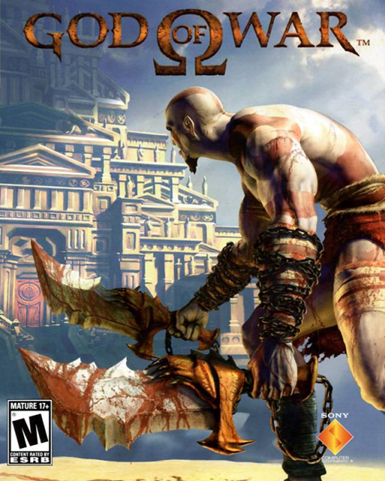
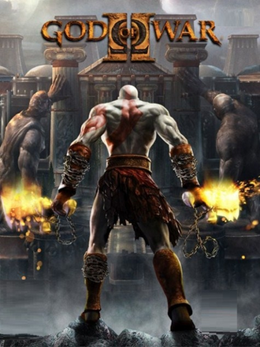
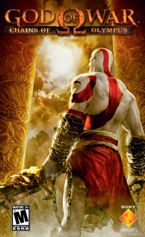
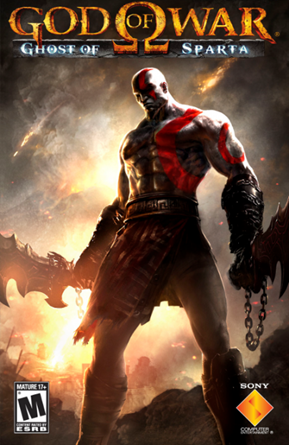
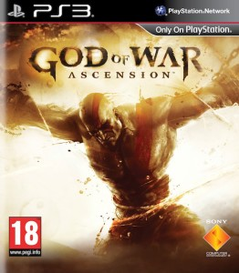
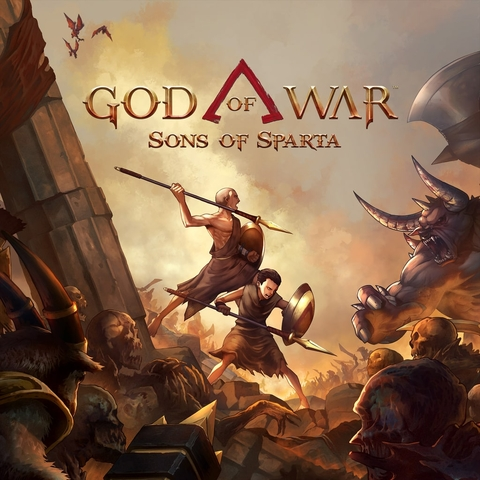

God of War
2005
Kratos inicia sua jornada de vingança contra Ares, o deus da guerra.

God of War é uma das maiores franquias da história dos videogames. A saga acompanha a jornada de Kratos, um guerreiro marcado pela vingança, pelo arrependimento e pela busca por redenção. Ao longo dos jogos, a série apresenta combates intensos, personagens marcantes e histórias inspiradas nas mitologias grega e nórdica.

2005
Kratos inicia sua jornada de vingança contra Ares, o deus da guerra.

2007
Após ser traído por Zeus, Kratos busca mudar seu destino.

2008
Kratos enfrenta ameaças aos deuses durante sua jornada na Grécia.
2010
Kratos enfrenta os deuses do Olimpo em uma batalha por vingança.

2010
Kratos parte em busca de seu irmão Deimos.

2013
Uma história anterior aos primeiros jogos revela parte do passado de Kratos.

2018
Kratos vive em terras nórdicas e embarca em uma jornada com seu filho Atreus.

2022
Kratos e Atreus enfrentam novos desafios enquanto o Ragnarök se aproxima.

2026
Uma aventura que explora a juventude de Kratos e sua relação com Deimos.